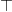

Logic and Proof
2 Propositional Logic
2.1 A Puzzle
The following puzzle, titled "Malice and Alice" is from George J. Summers, Logical Deduction Puzzles.
Alice, Alice's husband, their son, their daughter, and Alice's brother were involved in a murder. One of the five killed one of the other four. The following facts refer to the five people mentioned:
- A man and a woman were together in a bar at the time of the murder.
- The victim and the killer were together on a beach at the time of the murder.
- One of Alice's children was alone at the time of the murder.
- Alice and her husband were not together at the time of the murder.
- The victim's twin was not the killer.
- The killer was younger than the victim.
Which one of the five was the victim?
Take the time to try to work out a solution. Summers' book offers the following hint: "First find the locations of two pairs of people at the time of the murder, and then determine who the killer and the victim were so that no condition is contradicted."
2.2 A Solution
If you have worked on the puzzle, you may have noticed a few things. First, it is helpful to draw a diagram, and be systematic about searching for an answer. The number of characters, locations, and attributes (murderer, victim) is finite, so that there are only finitely many possible "states of affairs" that need to be considered. The numbers are also small enough so that systematic search through all the possibilities, though tedious, will eventually get you to the right answer.
Another thing that you may have noticed is that the question seems to presuppose that there is a unique answer to the question, which is to say, of all the states of affairs that meet the list of conditions, there is only one person who can possibly be the killer. A priori, without that assumption, there is a difference between finding some person who could have been the victim, and show that that person had to be the victim. Thus, there is a difference between exhibiting some state of affairs that meets the criteria, and proving that one of the characters had to be the victim, which is to say, demonstrating conclusively that no other solution is possible.
The published solution in the book not only produces a state of affairs that meets the criterion, but at the same time proves that this is the only one that does so. It is quoted below, in full.
From [1], [2], and [3], the roles of the five people were as
follows: Man and Woman in the bar, Killer and Victim on the beach, and
Child alone.
Then, from [4], either Alice's husband was in the bar and Alice was
on the beach, or Alice was in the bar and Alice's husband was on the
beach.
If Alice's husband was in the bar, the woman he was with was his
daughter, the child who was alone was his son, and Alice and her
brother were on the beach. Then either Alice or her brother was the
victim; so the other was the killer. But, from [5], the victim had a
twin, and this twin was innocent. Since Alice and her brother could
only be twins to each other, this situation is impossible. Therefore
Alice's husband was not in the bar.
So Alice was in the bar. If Alice was in the bar, she was with her brother or her son.
If Alice was with her brother, her husband was on the beach with one
of the two children. From [5], the victim could not be her husband,
because none of the others could be his twin; so the killer was her
husband and the victim was the child he was with. But this situation
is impossible, because it contradicts [6]. Therefore, Alice was not
with her brother in the bar.
So Alice was with her son in the bar. Then the child who was alone was her daughter. Therefore, Alice's husband was with Alice's brother on the beach. From previous reasoning, the victim could not be Alice's husband. But the victim could be Alice's brother because Alice could be his twin.
So Alice's brother was the victim and Alice's husband was the killer.
This argument relies on some "extra logical" elements, for example, that a father cannot be younger than his child, and that a parent and his or her child cannot be twins. But there are also a number of common logical terms, and associated patterns of inference. In the next section, we will focus on some of the rules governing the terms "and," "or," "not," and "if … then". Following the model described in the introduction, each such construction will be analyzed on three levels:
- the way it is used and employed in informal (mathematical) arguments
- a formal, symbolic representation
- the implementation in Lean
2.3 Rules of Inference
2.3.1 Implication
The first pattern of reasoning we will discuss, involving "if … then," may be the most confusing, because its use is largely implicit in the solution above. Consider the fourth paragraph. Spelled out in greater detail, the inference runs as follows:
If Alice was in the bar, Alice was with her brother or son.
Alice was in the bar.
Alice was with her brother or son.
This rule is sometimes known as modus ponens, or "implication elimination," since it tells us how to use an implication in an argument. In a system of natural deduction, it is expressed as follows:
The way to read this is as follows: if you have a proof of , possibly from some hypotheses, and a proof of , possibly from hypotheses, then combining these yields a proof of , from the hypotheses in both subproofs.
In Lean, the inference is expressed as follow:
The first command declares two variables, A and B, ranging over
propositions. The second line introduces two premises, namely, A → B
and A. The next line asserts, as an example, that B follows from
the premises. The proof is written simply H₁ H₂: think of this as
the premise H₁ "applied to" the premise H₂.
You can enter the arrow by writing \to or \imp or \r. You can
enter H₁ by typing H\_1. It is conventional to use the letter H
for a hypothesis, but you can use any reasonable alphanumeric
identifier. The name H1 is a different from H₁, but also a
reasonable choice.
The rule for proving an "if … then" statement is more subtle. Consider the beginning of the third paragraph, which argues that if Alice's husband was in the bar, then Alice or her brother was the victim. Abstracting away some of the details, the argument has the following form:
Suppose Alice's husband was in the bar.
Then …
Then …
Then Alice or her brother was the victim.
Thus, if Alice's husband was in the bar, then Alice or her brother was the victim.
This is a form of hypothetical reasoning. On the supposition that holds, we argue that holds as well. If we have successful, we have shown that implies , without supposing . In other words, the temporary assumption that holds is "canceled" by making it explicit in the conclusion.
The hypothesis is given the label ; when the introduction rule is applied, the label indicates the relevant hypothesis. The line over the hypothesis indicates that the assumption has been "canceled" by the introduction rule.
In Lean, this inference takes the following form:
To prove A → B, we assume A, with label H, and show B. Here,
the word sorry indicates that the proof is omitted. In this case,
this is necessary; since A and B are arbitrary propositions, there
is no way to prove B from A. In general, though, A and B will
be compound expressions, and you are free to use the hypothesis H :
A to prove B.
Using sorry, we can illustrate the implication elimination rule
alternatively as follows:
2.3.2 Conjunction
As was the case for implication, other logical connectives are generally characterized by their introduction and elimination rules. The former show how to establish a claim involving the connective, while the latter show how to use such a claim to derive others.
Let us consider, for example, the case of conjunction, that is, the word "and." Informally, we establish a conjunction by establishing each conjunct. For example, informally we might argue:
Alice's brother was the victim.
Alice's husband was the killer.
Therefore Alice's brother was the victim and Alice's husband was the killer.
The inference seems superfluous, since the word "and" simply combines the two assertions into one, and informal proofs often downplay the distinction. In natural deduction, the rule reads as follows:
In Lean, the rule is denoted and.intro:
You can enter the wedge symbol by typing \and.
The two elimination rules allow us to extract the two components:
Alice's husband was in the bar and Alice was on the beach.
So Alice's husband was in the bar.
Or:
Alice's husband was in the bar and Alice was on the beach.
So Alice's was on the beach.
In natural deduction, these patterns are rendered as follows:
In Lean, the inferences are known as and.left and and.right:
2.3.3 Negation and Falsity
In logical terms, showing "not A" amounts to showing that A leads to a contradiction. For example:
Suppose Alice's husband was in the bar.
…
This situation is impossible.
Therefore Alice's husband was not in the bar.
This is another form of hypothetical reasoning, similar to that used in establishing an "if … then" statement: we temporarly assume A, show that leads to a contradiction, and conclude that "not A" holds.
In natural deduction, the rule reads as follows:
In Lean, it is illustrated by the following:
You can enter the negation symbol by typing \not.
The elimination rule is dual to these. It expresses that if we have both "A" and "not A," then we have a contradiction. This pattern is illustrated in the informal argument below, which is implicit in the fourth paragraph of the solution to "Malice and Alice."
So the killer was her husband and the victim was the child he was with.
So the killer was not younger than his victim.
But according to [6], the killer was younger than his victim.
This situation is impossible.
In symbolic logic, the rule of inference is expressed as follows:
And in Lean, it is implemented in the following way:
Notice that the negation elimination rule is expressed in a manner similar to implication elimination: the label asserting the negation comes first, and by "applying" the proof of the negation to the proof of the positive fact, we obtain a proof of falsity.
Notice that in the symbolic framework, we have introduced a new
symbol, . It corresponds to the identifier false in Lean, and
natural language phrases like "this is a contradiction" or "this is
impossible".
What are the rules governing ? In natural deduction, there is no introduction rule; "false" is false, and there should be no way to prove it, other than extract it from contradictory hypotheses. On the other hand, natural deduction provides a rule that allows us to conclude anything from a contradiction:
The elimination rule also has the fancy Latin name, ex falso sequitur quodlibet, which means ``anything you want follows from falsity.'' In Lean it is implemented as follows:
The false elimination rule is harder to motivate from a natural language perspective, but, nonetheless, it is really needed to capture common patterns of inference. One way to understand it is this. Consider the following statement:
For every natural number , if is prime and greater than 2, then is odd.
We would like to say that this is a true statement. But if it is true, then it is true of any number . Taking , we have the statement:
If 2 is prime and greater than 2, then 2 is odd.
In this conditional statement, both the antecedent and succedent are false. The fact that we are committed to saying that this statement is true shows that we should be able to prove, one way or another, that the statement 2 is odd follows from the false statement that 2 is prime and greater than 2. The ex falso neatly encapsulates this sort of inference.
Notice that if we define to be , then the rules for negation introduction and elimination are nothing more than implication introduction and elimination, respectively. We have think of expressed colorfully by saying "if is true, then pigs have wings," where "pigs have wings" is stands for .
2.3.4 Disjunction
The introduction rules for disjunction, otherwise known as "or," are
straightforward. For example, the claim that condition [3] is met in
the proposed solution can be justified as follows:
Alice's daughter was alone at the time of the murder.
Therefore, either Alice's daughter was alone at the time of the murder, or Alice's son was alone at the time of the murder.
In terms of natural deduction, the two introduction rules are as follows:
Here, the and stand for "left" and "right". In Lean, they are implemented as follows:
You can enter the vee symbol by typing \or. The identifiers inl
and inr stand for "insert left" and "insert right," respectively.
The disjunction elimination rule is trickier, but it represents a natural form of case-based hypothetical reasoning. The instances that occur in the solution to "Malice and Alice" are all special cases of this rule, so it will be helpful to make up a new example. Suppose, in the argument above, we had established that either Alice's brother or her son was in the bar, and we wanted to argue for the conclusion that her husband was on the beach. One option is to argue by cases: first, consider the case that her brother was in the bar, and argue for the conclusion on the basis of that assumption; then consider the case that her son was in the bar, and argue for the same conclusion, this time on the basis of the second assumption. Since the two cases are exhaustive, if we know that the conclusion holds in each case, we know that it holds outright. The pattern looks something like this:
Either Alice's brother was in the bar, or Alice's son was in the bar.
Suppose, in the first case, that her brother was in the bar. Then … Therefore, her husband was on the beach.
On the other hand, suppose her son was in the bar. In that case, … Therefore, in this case also, her husband was on the beach.
Either way, we have established that her husband was on the beach.
In natural deduction, this pattern is expressed as follows:
And here it is in Lean:
What makes this pattern confusing is that it requires to instances of
nested hypothetial reasoning: in the first block of parentheses, we
temporarily assume A, and in the second block, we temporarily assume
B. When the dust settles, we have established C outright.
2.3.5 Bi-implication
"If and only if"
2.3.6 True
2.3.7 Proof by Contradiction
2.4 Writing Proofs in Natural Deduction
As noted in Chapter Introduction, there are two common styles for writing natural deduction derivations. (The word "derivation" is often used to connote a formal proof instead of an informal one. When talking about natural deduction, we will use the words "derivation" and "proof" interchangeably.) In both cases, proofs are presented on paper as trees, with the conclusion at the theorem at the root, and hypotheses up at the leaves. In the first style of presentation, the set of hypotheses is written explicitly at every node of the tree. This is helpful because some rules (namely, implication introduction, negation introduction, or elimination, and proof by contradiction) change the set of hypotheses, by canceling a local or temporary assumption. Nonetheless, we will use a style of presentation that leaves this information implicit, so that each node of the tree is labelled with an explicit formula. Some people like to label each inference with the rule that is used, but that is usually clear from the context, so we will omit that as well. But when a rule cancels a hypothesis, we will make that clear in the following way: we will label all instances of the hypothesis at the leaves with a letter, like "x," and then we will use that letter to annotate the place where the rule is canceled.
In addition to all the rules listed in the last section, there is one additional rule that is central to the system, namely the assumption rule. It works like this: at any point, you can assume a hypothesis, . The way to "read" such a one-line proof is this: assuming , you have proved . Without this rule, there would be no way of getting a proof of the ground! After all, every rule listed in the last section has premises, which is to say, it can only be applied to derivations that have been constructed previously.
Let us consider a few examples. In each case, you should think about what the formulas say and which rule of inference is invoked at each step. Also pay close attention to which hypotheses are canceled at each stage. If you look at any node of the tree, what has been established at that point is that the claim follows from the uncanceled hypotheses. Here is a proof of :
There is a general heuristic that is useful for deriving theorems like these, namely:
- First, work backwards from the conclusion, using the introduction
rules. For example, if you are trying to prove a statement of the
form
 , add to your list of hypotheses and try to
derive . If you are trying to prove a statement of the form , use the and-introduction rule to reduce your task to
proving , and then proving .
, add to your list of hypotheses and try to
derive . If you are trying to prove a statement of the form , use the and-introduction rule to reduce your task to
proving , and then proving . - When you have run out things to do in the first step, use
elimination rules to work forwards. If you have hypotheses
 and , apply modus ponens to derive . If you have a
hypothesis , use or elimination and try to prove any open
goals by splitting on cases, considering in one case and in
the other.
and , apply modus ponens to derive . If you have a
hypothesis , use or elimination and try to prove any open
goals by splitting on cases, considering in one case and in
the other. - If all else fails, use a proof by contradiction.
When writing expressions in symbolic logic, we will adopt the an order of operations, which allow us to drop superfluous parentheses. When parsing an expression: – negation binds most tightly – then conjunctions and disjunctions, from right to left – and finally implications and bi-implications. So, for example, the expression is understood as
The next proof shows that if a conclusion, , follows from and , then it follows from their conjunction.
The conclusion of the next proof can be interpreted as saying that if it is not the case that one of or is true, then they are both false.
2.5 Writing Proofs in Lean
We will see that Lean has mechanisms for modeling proofs at a higher level than natural deduction derivations. At the same time, you can also carry out low-level inferences, and carry out proofs that mirror natural deduction proofs quite closely. Here is a Lean representation of the first example in the previous section:
The first line declares propositional variables A, B, and C. The
line that begins with the keyword example declares the theorem to be
proved, and the notation := indicates that the proof will
follow. The line breaks and indentation is only for the purposes of
readability; Lean would do just was well if the entire proof were
written as one run-on line.
Here are some additional notes:
– It is often important to name a theorem for future proof. Lean
allows us to do that, using one of the keywords theorem, lemma,
proposition, corollary, followed by the name of the proof.
– You can omit a label in a have statement. You can then refer to
that fact using the label this, until the next anonymoyus
have. Alternatively, at any point later in the proof, you can
refer to the fact by putting the assertion between backticks.
– One can also omit the label in an assumption by using the keyword
suppose instead.
With these features, the previous proof can be written as follows:
In fact, such a presentation provides Lean with more information than
is really necessary to construct an axiomatic proof. The word assume
can be replaced by the symbol λ, assertions can be omitted from an
assume when they can be inferred from context, the justification of
a have statement can be inserted in places where the label was
otherwise used, and one can omit the show clauses, giving only the
justification. As a result, the previous proof can be written in an
extremely abbreviated form:
Such proofs tend to be harder to write, read, understand, maintain, and debug, however, and so we will tend to favor structure and readability over brevity.
The next proof in the previous section can be rendered in Lean as follows:
And the last proof can be rendered as follows:
2.6 Writing Informal Proofs
2.7 Derived Rules and Coarser Steps
In the examples above, we showed that, given and ,
we can derive in natural deduction. This is a common pattern of
inference, and, having justified it once, one might reasonably want to
use it freely as a new one-step inference. Similarly, having proved  equivalent to , or equivalent
to , one might feel justified in replacing one
by the other in any expression.
equivalent to , or equivalent
to , one might feel justified in replacing one
by the other in any expression.
Indeed, this is how informal mathematics works: even if we start with some basic rules of inference, we learn to recognize more complex patterns and apply them freely. A single step in the informal argument in the solution to "Malice and Alice," or any mathematical proof, usually requires many more steps in a formal calculus. Moreover, in ordinary mathematics, one we prove a proposition or theorem, we can freely invoke it in another proof later on.
In symbolic logic, "derived rules".
In Lean, naming theorems and reusing them. (Also, eventually, automation.)
To summarize:
– When we ask you to prove something in natural deduction, our goal is to make you work with the precise, formal rules of the system. So you should not appeal to external rules unless we explicitly say so.
– When writing informal proofs, it is a judgment call as to what prior patterns of reasoning and background facts you may appeal to. In a classroom setting, the goal may be to demonstrate mastery of the subject to the instructors, in which case, context should dictate what is allowable (and it is always a good idea to err on the side of caution). In real life, your goal is to convince your target audience, and you will have to rely on convention and experience to judge what patterns of inference you can put forth, and how much detail you need to use.
– In interactive theorem proving, the main goal is to have the computer certify the proof as correct, and in that respect, automation and facts from the library are fair game. In this class, we will try to be explicit about what we would like you to use in the exercises we assign.
2.8 Truth Tables and Semantics
In the previous sections, we've seen how to prove logical formulas from hypotheses. If the hypotheses are true, the derived formula must be true as well. A formula that can be derived from no hypotheses is said to be valid: for example, is true no matter what we suppose about .
Not every sentence is valid, of course. Earlier we saw the example .
We cannot derive this formula without some extra assumptions about and .
Try it:
Without some more information, there's no argument we could put in place of the "sorry" to complete this proof. After all, could be false!
What do we mean by "false," exactly? Notice that we've been careful not to use the words "true" and "false" before now. Deductions and formal proofs are syntactic ideas- that is, they have to do with the symbols and symbolic structure of the formulas involved. Truth is a semantic notion- it ascribes some extra-logical meaning to they symbols involved.
Syntactically, we were able to ask and answer questions like the following:
- Can I derive a certain formula from certain hypotheses?
- How do I derive a certain formula from certain hypotheses?
- What formulas can I derive from certain hypotheses?
The questions we consider semantically are slightly different:
- Given a truth assignment for propositional variables, is a certain formula true or false?
- Under what conditions is a certain formula true or false?
Our notions of syntax and semantics have developed carefully, so that they exist in harmony. We'll expand on this in the next section. For now, we'll discuss the basic methods we use to answer semantic questions.
The first notion we'll need is that of a truth value. Conveniently, we know our two truth values already: they're just "true" and "false." (We'll use the symbols  and , respectively.) (Jeremy, will we? Do you prefer other notation?)
In this class, we'll adopt a "classical" notion of truth. This notion comes with many implications. For now, though, it means only the following: any proposition is either true or false, but not both. This means a proposition cannot be neither true nor false.
This binary conception of truth corresponds to the syntactic tautology . Semantically, we read this sentence as saying "either is true, or is true." Since is true exactly when is false, it equivalently says "either is true, or is false."
The next notion we'll need is that of a truth assignment. A truth assignment simply tells us which atomic statements are true, and which are false. In formal logic, this amounts to a mapping from our propositional letters , , etc. to the set of truth values . For instance,
is a (partial) truth assignment.